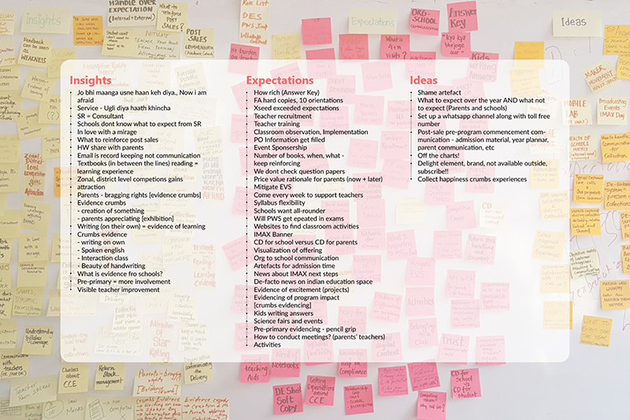

Duration
10 months
Jan-Nov 2016
Context
Xamcheck is a data driven personalised assessment organisation, which partners with schools and support them throughout the processes to drive learning in terms of personalised feedback reports for each student and remedial in order to facilitate further improvements. IMAX program is a flagship program which provides full-scale solution that blocks all the gaps in the education supply chain. IMAX empowers Teachers with granular, actionable information about each student in their classrooms and providing students with tailored material that is personalized for their individual needs. The product provides a connected learning experience for schools through offline and online means.
Service design is cross-disciplinary, it combines tools and methods from varied disciplines like marketing, business, design and technology. Service design helps organisations innovate or improve services which fulfills the utility, usability and desirability of the service for the customers
The project centers around understanding, identifying, ideating and implementing design solutions at numerous touchpoints, interactions and artefacts for pre, during and post service stages with IMAX program and school academic calendar.
My Role
I led the design project with a focus on simplifying the existing information architecture, the navigation, and restructure service layers of all the interactions with IMAX program and offer business stickiness with their customers.
As a service designer I collaborated with multiple stakeholders, conducted various co-creation workshops to build the qualitative understanding of the service and its customers and end users, plan and design to create the best possible service experience for service delivery and maintenance.
Sponser
Xamcheck,
Bangalore
Bangalore
Advisors
Sharad Baliyan
Krishnesh Mehta
Krishnesh Mehta
Design brief
The initial design brief as offered by the sponsor, Xamcheck was to develop engaging learning experiences for learners and also to identify opportunities that adds values to the current service delivered by the organisation. Design brief included co-creations, interventions on making things more effective, logistics to academic orientation, obtaining valuable customer satisfaction and growth. The organisation being a startup at the point of time, required to address its service design component for growth and implementation of program.
Later, the brief was redesigned to kill program friction, reach customer satisfaction while maintaining hygiene factor with delightful experience, remove friction from collections, probe renewals and reduce internal team stress with the addition of awareness and transparency, and also to identify opportunities that adds values to the current service delivered by the organisation. The ultimate goal of this project was to help customers build expectations what we want them to have.
The outcome
The project outcome is a tool to showcase program values, reset customer expectations, strengthen the relationship between organisation and school, and maintain transparency. It is an inclusive, inter-disciplinary artefact that brings in order between various processes, positions brand and its service throughout the academic year. It further opens up opportunities to build new technology driven artefacts, platforms and service touchpoints.
About the project
In the process of generating delightful customer experience, the research moved towards identifying expectations of the customers and hence the name Arzoo. It built an understanding of how customers perceive us, help our internal teams understand and manage expectations, give customer a good idea of what they are getting and when, help them build an understanding of what to expect throughout the year.
PROJECT GOAL:
Helping our customers build expectations we want them to have.
OBJECTIVES:
Mapping our customers’ perception of us as a service provider.
Help customers build an understanding of the product/ service with respect to school/ student/ parent.
Help customers understand our expectations from them.
Help monitor the meeting of these program expectations.
SCOPE:
What expectations do schools set up with parents?
PROJECT STAGES:
Discover > Build > Test > Deploy
The Process
I started with understanding various aspects of education, personalised learning and service design. Design process is iterative in nature. It breaks up into research, analysis, exploration, ideation, creation, reflection and implementation. The initial phase of the process is always fuzzy. But with iterations, it leads to concrete and focused outputs. Service design follows different processes and approaches for designing various interactions.
Service design focuses on the human side of customer service to balance the trade offs between the cost of services and the user experience. It looks into the principles of behavioural sciences, changing social landscape, technological advancements, and the changing nature of the interaction themselves. The health of the service is affected by all the mentioned aspects. The human element of service design describes what really motivates, irritates the customer. It analyses the emotional state of customer at one interaction at the beginning and end of the interaction. This approach in practice allows customers to feel more in control dislike unexpected changes. It helps organisations to turn service weaknesses into strengths and even spot new service offerings.
The process details are defined below.
Phase 1: Research

Phase 2: Analysis


Final takeaways for ideation
01. Program-ness
How to Infuse Program-ness in the Program?
02. What-not-ness
How to Meet Basic of the Expectation + Gracefully Deflect “What NOTs”?
03. Perceived wins
How to create Perceived Wins - Immediate and throughout?
04. Evidencing
How to Craft Evidences (Crumb Style) of Program Effectiveness/Program/_____?
Phase 3: Ideation
In this project, the initial ideation brainstorming was conducted in groups considering the project pivots to come up with multiple ideas across all touchpoints. These ideas were then discussed and demonstrated to move the most relevant and important ones into action. Selected ideas were then detailed and focused for prototyping and usability.
Early explorations
On the basis of discussions over all the ideas, the team decided to take forward the ones which covers most of the touchpoints, can club two or three ideas in itself, will help reset expectations, craft evidence, create value for the company, help the organisation build transparency over the networks, generate awareness, position brand and reinforce renewals.
The idea taken forward is: Program PortfolioCreating framework for selected idea
Goal:
Set expectations of what the IMAX offering is. Evidencing of all the events, elements and phases delivered/ due with IMAX. Record keeping.
Primary objective:
To help owner know what they have bought and what they will be getting throughout the year.
Secondary objective:
To set the program awareness Keep records of all the transactions, services, products etc. deliveries made to school with acknowledgement and remarks. Make collection process easier Can be used to show to parents Convey bargain winning
Users
School Owner
School Academic Coordinator
Area Business Manager
*All separate pages - for customization based on the school offering taken. (Can add or remove pages from the file based on the requirement and setup).
*Complete file to track and keep the invoices and other credentials.
*Copy of Purchase Order.
*Student count - capture the change from start to end.
*QR codes for each page.
*Design to computer read the document.
*Product pages can be made based on various series and education levels (Pre-primary, Primary, Secondary)

Creating service map for program portfolio
Final product
Reflections
There was always a set of learning throughout this project duration. From certain skills like qualitative research to visualising things in excel, from scheduling interviews to follow ups, from mapping to script writing, from being defensive to concept critique, from explorations to final decision, from saying yes to saying no, from concepts to implementation challenges, everything everytime has made me learn something new or improve. Service design has always been an essential discipline in design. It is now that people have started to look at it from design lens. Personalisation in shaping learning experience in India is serving the latent need. This project has been considered for implementation and many of the artefacts are already in practice.
I have learned a lot about how to collaborate with Product Managers and developers to unravel and communicate the user needs and product direction. I never calculated but I am quite sure I spent more time in meetings than what I spent creating the designs and I did spend a lot of time designing hands on.